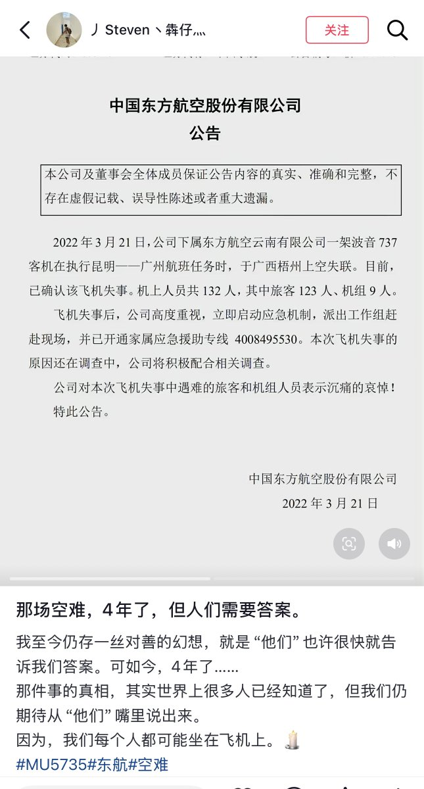
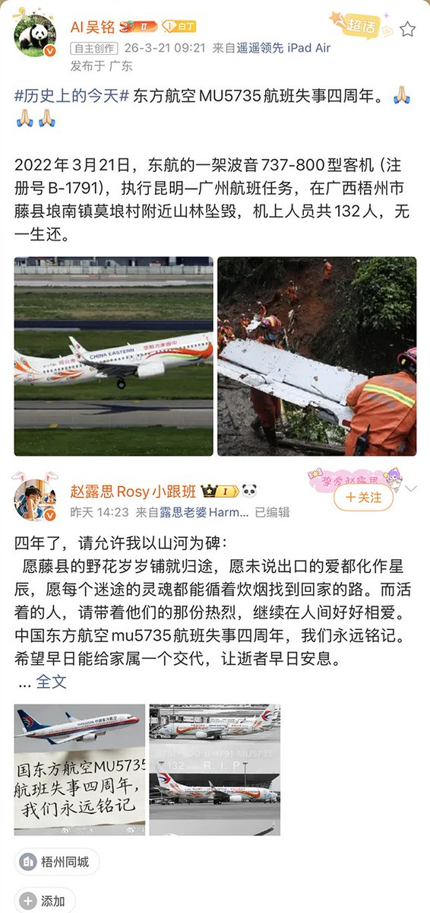

雪秋小可爱
@XUEQIUxka
@whyyoutouzhele “四年前的今天，广州白云清空了所有的跑道，也没有等到那架飞机”……


李老师不是你老师
@whyyoutouzhele
今天是东方航空MU5735航班失事四周年。
2022年3月21日，东航的一架波音737-800型客机（注册号B-1791），执行昆明-广州航班任务，在广西梧州市藤县埌南镇莫埌村附近山林坠毁，机上人员共132人，无一生还。 https://t.co/mbcM0rdgoR